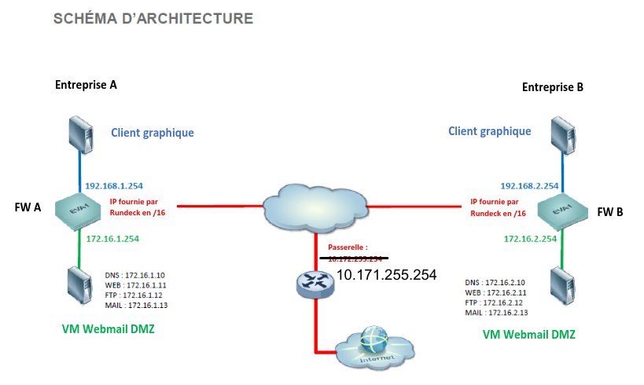

Projet n°8 : SAE 4.1 : interconnexion de deux entreprises avec des pare-feux Stormshield
Contexte :
SAE 4.1 de 2e année de BUT R&T, réalisée en binôme avec Tom. Chacun administrait le pare-feu Stormshield d'une entreprise, et les deux entreprises devaient pouvoir communiquer de façon sécurisée.
Objectif :
Configurer, filtrer et interconnecter deux réseaux d'entreprise comprenant chacun un réseau interne et une DMZ hébergeant des serveurs DNS, web, FTP et mail.

Architecture de la SAE : deux entreprises, chacune protégée par son pare-feu, avec une DMZ
Travaux :
La SAE était découpée en labs successifs :
Prise en main : accès en CLI et en interface web, paramètres système, accès SSH, sauvegarde de la configuration
Objets : hôtes, réseaux, services et groupes, dont un import par fichier CSV
Interfaces et routage : interfaces IN, OUT et DMZ, passerelle par défaut, routes statiques, cache DNS
Translation d'adresses : NAT dynamique vers Internet et NAT statique pour publier les serveurs FTP, mail et web
Filtrage : politique organisée par flux (internes, sortants, entrants)
Filtrage applicatif : filtrage d'URL HTTP/HTTPS et règles SMTP